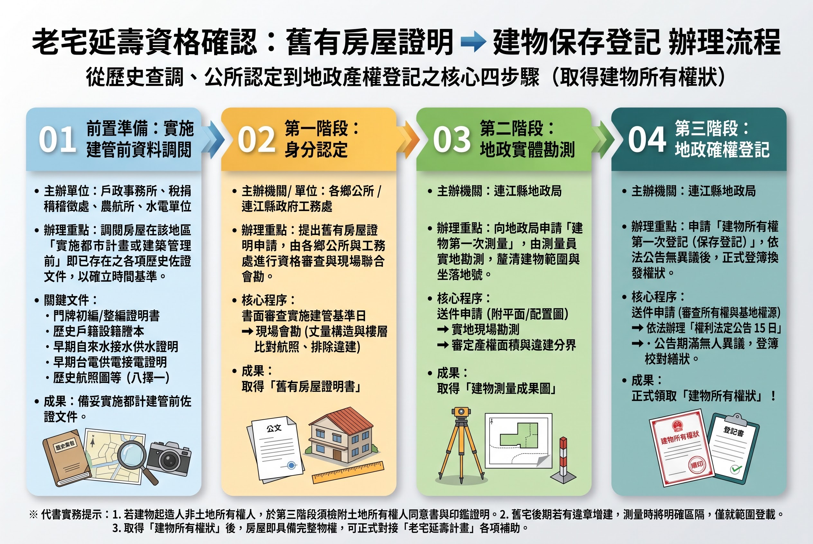

1號 陳玉媛 主張：115-116年全額初評、最高30萬補助、四鄉五島全面普惠！
連江縣長候選人 1號 陳玉媛 以南竿復興村為奮鬥基地，深刻體會鄉親面對老屋漏水、結構老舊與產權未定之苦。 陳玉媛提出三大保證： 第一、初評全額補助：攜手國土署 32 家專業公證機構，免費替全縣老宅體檢； 第二、修繕補助最高 30 萬元：針對長者弱勢家庭再加碼，實質減輕修屋負擔； 第三、地政登記一條龍輔導：舊有合法房屋證明與測量簡政便民，守護鄉親祖產！
核定補助款 = min( 工程報價 × 65%, 施作面積 × 3,500元, 法定單項/總額上限 )陳玉媛競選團隊為鄉親備妥完整標準範本，點擊即可直接下載並填寫送件：
透天厝申請必備第一步，勾選結構、外牆及防水修繕工項。
公寓大樓共用部分修繕申請，附管委會或住戶同意證明。
詳細工程報價、施工廠商資格及期程進度規劃書。
包含公共管線更換、外牆磁磚拉皮之全棟計畫規格書。
初評送件前自我檢查清單（符合老宅認定、無產權糾紛等）。
全體區分所有權人過半數決議及工程自籌款到位確認。

備齊航照圖或戶籍水電歷史證明，向所在地鄉公所申辦「舊有合法房屋證明」。
連江縣地政局排定現地測量，核發「建物測量成果圖」，釐清法定施作面積。
依法公告 30 天無人異議後，正式核發中華民國「建物所有權狀」，產權名正言順。
委託國土署 32 家初評專業團隊（全額補助）現地安檢，出具安全性初評報告。
送件工務處審查核定，施工驗收後直接匯入民眾帳戶（最高 30 萬元補助）。